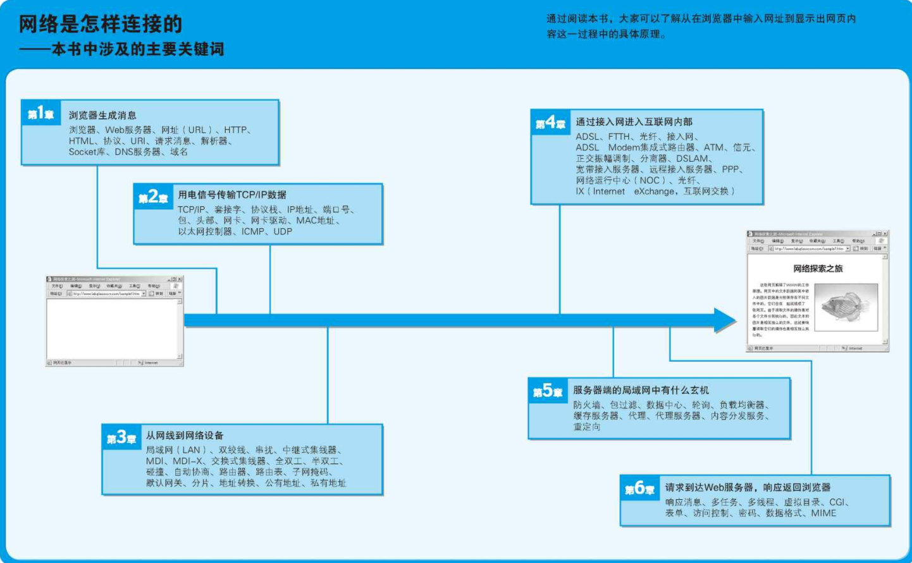

第一章
1、QQ是直接使用IP地址来连接服务器的。所以即使DNS失效，它依然可以“屹立不倒”，以至于现在有很多人把QQ当成一个排查DNS问题的“参照物”。
2、浏览器会委托操作系统中的网络控制软件将消息发送给服务器。
3、网络控制软件叫做协议栈。这个软件会将从浏览器接收到的消息打包，然后加上目的地址等控制信息。
4、协议栈会将包交给网卡（负责以太网或无线网络通信的硬件）。然后，网卡会将包转换成电信号并通过网线发送出去。这样一来，包就进入到网络之中了。
5、网卡发送的包会经过交换机等设备，到达用来接入互联网的路由器。路由器的后面就是互联网，网络运营商会负责将包送到目的地。
6、接下来，数据从用来接入互联网的路由器出发，进入了互联网的内部。互联网的入口线路称为接入网。一般来说，我们可以用电话线、ISDN、ADSL、有线电视、光线、专线等多种通信线路来接入互联网，这些通信线路统称为接入网。接入网连接到签约的网络运营商，并接入被称为接入点（Point of Presence，PoP）的设备。接入点的实体是一台专为运营商设计的路由器。网络包首先通过接入网被发送到接入点，然后再从这里被发送到全国甚至全世界。接入点的后面就是互联网的骨干部分了。在骨干网中存在很多运营商和大量的路由器，这些路由器相互连接，组成一张巨大的网，而我们的网络包就在其中经过若干路由器的接力，最终被发送到目标Web服务器上。
7、无论是在互联网中，还是在家庭、公司的局域网中，包都是以相同的方式传输的，这也是互联网的一大特征。
8、通过骨干网之后，网络包最终到达了Web服务器所在的局域网中。接着，它会遇到防火墙，防火墙会对进入的包进行检查。检查完之后，网络包接下来可能还会遇到缓存服务器。网页数据中有一部分是可以重复利用的，这些可以重复利用的数据就被保存在缓存服务器中。如果要访问的网页数据正好在缓存服务器中能够找到，那么就可以不用劳烦Web服务器，直接从缓存服务器读出数据。此外，在大型网站中，可能还会配置将消息分布到多台Web服务器上的负载均衡器，还有可能会使用通过分布在整个互联网中的缓存服务器来分发内容的服务。经过这些机制之后，网络包才会到达Web服务器。
9、当网络包到达Web服务器后，数据会被解包并还原为原始的请求信息，然后交给Web服务器程序。和客户端一样，这个操作也是由操作系统中的协议栈（网络控制软件）来完成的。接下来，Web服务器程序分析请求消息的含义，并按照其中的指示将数据装入响应消息中，然后发回给客户端。当响应到达客户端之后，浏览器会从中读取出网页的数据并在屏幕上显示出来。

10、
个协议的名字， 而是 Web 的提出者最早开发的浏览器兼 HTML 编辑器的名字。
2. √。 如果是“.com”“.net”“.org”“.jp”（除“co.jp”“ne.jp”等“xx.jp”格式的域名外） 等没有对注册对象范围进行
限制的域名， 任何个人都可以申请注册。 此外， 也有一种“.name”域名是专门为个人申请者准备的。
中国的情况类似， 个人可以申请“.cn”域名， 但“.com.cn”“.net.cn”等域名则是不开放给个人注册的。 此外， 日本的域名体系中， “.jp”下级的域
名用的是两个字母的命名， 例如“.co.jp”“.ne.jp”， 而中国使用的是三个字母的命名， 例如“.com.cn”“.net.cn”。 ——译者注
3. √。 应用程序并不是自己去控制网络， 而是委托操作系统来控制网络。
11、URL：Uniform Resource Locator，统一资源定位符


12、协议：通信操作的规则定义称为协议。
像“file:”这样的URL在访问时是不使用网络的，因此说URL的开头部分表示的是协议类型并不完全准确，也许理解为“访问方法”会更好一些。
13、HTTP协议定义了客户端和服务器之间交互的消息内容和步骤。首先，客户端会向服务器发送请求信息。请求信息中包含的内容是“对什么”和“进行怎样的操作”两部分。
“对什么”的部分称为URI（Uniform Resource Identifier，统一资源标识符）。一般来说，URI的内容是一个存放网页数据的文件名或者是一个CGI程序的文件名。（CGI程序：对Web服务器程序调用其他程序的规则所做的定义就是CGI，而按照CGI规范来工作的程序就称为CGI程序。）
“进行怎样的操作”的部分称为方法（GET,POST,HEAD,OPTIONIS,PUT,DELETE,TRACE,CONNECT）。方法表示需要让Web服务器完成怎样的工作，其中典型的例子包括读取URI表示的数据、将客户端输入的数据发送给URI表示的程序等。

14、 收到请求消息之后， Web 服务器会对其中的内容进行解析， 通过 URI 和方法来判断“对什么”“进行怎样的操
作”， 并根据这些要求来完成自己的工作， 然后将结果存放在响应消息中。 在响应消息的开头有一个状态
码， 它用来表示操作的执行结果是成功还是发生了错误。 当我们访问 Web 服务器时， 遇到找不到的文件就
会显示出 404 Not Found 的错误信息， 其实这就是状态码。 状态码后面就是头字段和网页数据。 响应消息会
被发送回客户端， 客户端收到之后， 浏览器会从消息中读出所需的数据并显示在屏幕上。 到这里， HTTP 的
整个工作就完成了。
15、如果Web服务器使用了虚拟主机功能，有可能无法通过IP地址来访问。
16、DNS：Domain Name System，域名服务系统。将服务器名称和IP地址进行关联是DNS最常见的用法，但DNS的功能并不仅限于此，它还可以将邮件地址和邮件服务器进行关联。以及为各种信息关联相应的名称。
17、对于DNS服务器，我们的计算机上一定有相应的DNS客户端，而相当于DNS客户端的部分称为DNS解析器，或者简称解析器。通过DNS查询IP地址的操作称为域名解析，因此负责执行解析（resolution）这一操作就叫做解析器（resolver）了。
解析器实际上是一段程序，它包含在操作系统的Socket库中。
18、库就是一堆通用程序组件的集合，其他的应用程序都需要使用其中的组件。Socket库也是一种库，其中包含的程序组件可以让其他的应用程序调用操作系统的网络功能，而解析器就是这个库中的其中一种程序组件。Socket库中包含很多用于发送和接收数据的程序组件。Socket库是调用网路功能的程序组件集合。
19、
调用解析器之后，解析器会向DNS服务器发送查询信息，然后DNS服务器会返回响应信息。响应信息中包含查询到的IP地址，解析器会取出IP地址，并将其写入浏览器指定的内存地址中。接下来，浏览器在向Web服务器发送信息时，只要从该内存地址取出IP地址，并将它与HTTP请求消息一起交给操作系统就可以了。
解析器工作流程：

一般来说， 应用程序编写的操作内容是从上往下按顺序执行的， 当到达需要调用解析器的部分时， 对应的那
一行程序就会被执行， 应用程序本身的工作就会暂停（图 1.12 ①） 。 然后， Socket 库中的解析器开始运行
（图 1.12 ②） ， 完成应用程序委托的操作。 像这样， 由于调用了其他程序， 原本运行的程序进入暂停状
态， 而被调用的程序开始运行， 这就是“控制流程转移” 。
当控制流程转移到解析器后， 解析器会生成要发送给 DNS 服务器的查询消息。 这个过程与浏览器生成要发
送给 Web 服务器的 HTTP 请求消息的过程类似， 解析器会根据 DNS 的规格， 生成一条表示“请告诉我
www.lab.glasscom.com 的 IP 地址” 的数据， 并将它发送给 DNS 服务器（图 1.12 ③） 。 发送消息这个操作
并不是由解析器自身来执行， 而是要委托给操作系统内部的协议栈 来执行。 这是因为和浏览器一样， 解
析器本身也不具备使用网络收发数据的功能。 解析器调用协议栈后， 控制流程会再次转移， 协议栈会执行发
送消息的操作， 然后通过网卡将消息发送给 DNS 服务器（图 1.12 ④⑤） 。
当 DNS 服务器收到查询消息后， 它会根据消息中的查询内容进行查询。
总之， 如果要访问的 Web 服务器已经在 DNS 服务器上注册， 那么这条记录就能够被找到， 然后其 IP 地址
会被写入响应消息并返回给客户端（图 1.12 ⑥） 。 接下来， 消息经过网络到达客户端， 再经过协议栈被传
递给解析器（图 1.12 ⑦⑧） ， 然后解析器读取出消息取出 IP 地址， 并将 IP 地址传递给应用程序（图 1.12
⑨） 。 实际上， 解析器会将取出的 IP 地址写入应用程序指定的内存地址中， 图 1.11 用“< 内存地址 >”来表
示， 在实际的程序代码中应该写的是代表这一内存地址的名称。
到这里， 解析器的工作就完成了， 控制流程重新回到应用程序（浏览器） 。 现在应用程序已经能够从内存中
取出 IP 地址了， 所以说 IP 地址是用这种方式传递给应用程序的。
顺带一提， 向 DNS 服务器发送消息时， 我们当然也需要知道 DNS 服务器的 IP 地址。 只不过这个 IP 地址是
作为 TCP/IP 的一个设置项目事先设置好的， 不需要再去查询了。 不同的操作系统中 TCP/IP 的设置方法也有
差异， Windows 中的设置如图 1.13 所示， 解析器会根据这里设置的 DNS 服务器 IP 地址来发送消息。

20、


第二章
1、

2、创建套接字
在协议栈内部有一块用于存放控制信息的内存空间， 这里记录了用于控制通信操作的控制信息， 例如通信对象的 IP 地址、 端口号、 通信操作的进行状态等。 本来套接字就只是一个概念而已， 并不存在实体， 如果一定要赋予它一个实体， 我们可以说这些控制信息就是套接字的实体， 或者说存放控制信息的内存空间就是套接字的实体。
协议栈在执行操作时需要参阅这些控制信息 。 例如， 在发送数据时， 需要看一看套接字中的通信对象 IP地址和端口号， 以便向指定的 IP 地址和端口发送数据。 在发送数据之后， 协议栈需要等待对方返回收到数据的响应信息， 但数据也可能在中途丢失， 永远也等不到对方的响应。 在这样的情况下， 我们不能一直等下去， 需要在等待一定时间之后重新发送丢失的数据， 这就需要协议栈能够知道执行发送数据操作后过了多长时间。 为此， 套接字中必须要记录是否已经收到响应， 以及发送数据后经过了多长时间， 才能根据这些信息按照需要执行重发操作。
套接字的作用：套接字中记录了用于控制通信操作的各种控制信息，协议栈需要根据这些信息判断下一步的行动。

3、连接
在客户端，需要把服务器的IP地址和端口号等信息告知协议栈；在服务器上，需要让客户端向服务器告知必要的信息，比如“ 我想和你开始通信， 我的 IP 地址是 xxx.xxx.xxx.xxx， 端口号是 yyyy。” 可见， 客户端向服务器传达开始
通信的请求， 也是连接操作的目的之一。
连接实际上是通信双方交换控制信息，在套接字中记录这些必要信息并准备数据收发的一连串操作， 像上面提到的客户端将 IP 地址和端口号告知服务器这样的过程就属于交换控制信息的一个具体的例子。
连接操作中所交换的控制信息是根据通信规则来确定的， 只要根据规则执行连接操作， 双方就可以得到必要的信息从而完成数据收发的准备。
此外， 当执行数据收发操作时， 我们还需要一块用来临时存放要收发的数据的内存空间， 这块内存空间称为缓冲区， 它也是在连接操作的过程中分配的。

返回 ACK 号的操作被称为确认响应， 通过这样的方式， 发送方就能够确认对方到底收到了多少数据。
返回 ACK 号时， 除了要设置 ACK 号的值以外， 还需要将控制位中的 ACK 比特设为 1， 这代表 ACK 号字段有效， 接收方也就可以知道这个网络包是用来告知 ACK 号的。
有一个将SYN控制位设为1并发给服务器的操作，就是在这一步将序号的初始值告知对方的。实际上，在将SYN设为1的同时，还需要同时设置序号字段的值，而这里的值就代表序号的初始值。发送SYN为1的网络包就表示发起连接的意思。
SYN是Synchronized（同步），意思是通过告知初始序号使通信双方保持步调一致，以便完成后续的数据收发检查。
4、TCP数据收发是双向的。首先客户端先计算出一个序号，然后将序号和数据一起发送给服务器，服务器收到之后会计算ACK号并返回给客户端；相反地，服务器也需要先计算出另一个序号，然后将序号和数据一起发送给客户端，客户端收到之后计算ACK号并返回给服务器。

5、

实际的工作过程（图 2.9） 。 首先， 客户端在连接时需要计算出与从客户端到服务器方向通信相关的序号初始值， 并将这个值发送给服务器（图 2.9 ①） 。 接下来， 服务器会通过这个初始值计算出 ACK 号并返回给客户端（图 2.9 ②） 。 初始值有可能在通信过程中丢失， 因此当服务器收到初始值后需要返回 ACK 号作为确认。 同时， 服务器也需要计算出与从服务器到客户端方向通信相关的序号初始值， 并将这个值发送给客户端（图 2.9 ②） 。 接下来像刚才一样， 客户端也需要根据服务器发来的初始值计算出 ACK 号并返回给服务器（图 2.9 ③） 。 到这里， 序号和 ACK 号都已经准备完成了， 接下来就可以进入数据收发阶段了。 数据收发操作本身是可以双向同时进行的， 但 Web 中是先由客户端向服务器发送请求，序号也会跟随数据一起发送（图 2.9 ④） 。 然后， 服务器收到数据后再返回 ACK 号（图 2.9 ⑤） 。 从服务器向客户端发送数据的过程则正好相反（图 2.9 ⑥⑦） 。
6、当接收方收到数据时，如果确认内容没有问题，就应该向发送方返回ACK号，因此我们可以认为收到数据之后马上就应该进行这一操作。
7、首先，发送方的数据到达接收方，在接受操作完成之后就需要向发送方返回ACK号，而再经过一段时间，当数据传递给应用程序之后才需要更新窗口大小。
因此， 接收方在发送 ACK 号和窗口更新时， 并不会马上把包发送出去， 而是会等待一段时间， 在这个过程
中很有可能会出现其他的通知操作， 这样就可以把两种通知合并在一个包里面发送了。
8、协议栈接受数据的操作过程：
首先，协议栈会检查收到的数据块和TCP头部的内容，判断是否有数据丢失，如果没有问题则返回ACK号。然后，协议栈将数据块暂存到接收缓存区中，并将数据块按顺序连接起来还原出原始的数据，最后将数据交给应用程序。具体来说，协议栈会将接收到的数据复制到应用程序指定的内存地址中，然后将控制流程交回应用程序。将数据交给应用程序之后，协议栈还需要找到合适的时机向发送方发送窗口更新。
9、


10、

11、数据收发操作小结


12、TCP模块在执行连接、收发、断开等各阶段操作时，都需要委托IP模块将数据封装成包发送给通信对象。

13、
- 路由器根据目标地址判断下一个路由器的位置
- 集线器在子网中将网络包传输到下一个路由
- 集线器是按照以太网规则传输包的设备，而路由器是按照IP规则传输包的设备。
- IP协议根据目标地址判断下一个IP转发设备的位置，子网中的以太网协议将包传输到下一个转发设备。

14、

15、Gateway（网关）：路由器；
子网掩码是用来判断任意两台计算机的ip地址是否属于同一子网络的根据。最为简单的理解就是两台计算机各自的ip地址与子网掩码进行and运算后，得出的结果是相同的，则说明这两台计算机是处于同一个子网络上的，可以进行直接的通讯。
子网掩码：用来判断IP地址中网络号和主机号分界线的值。
如果Gateway和Interface列的IP地址相同，就表示不需要路由器进行转发，可以直接将包发给接收方的IP地址。

16、查询MAC地址需要使用ARP
17、以太网的3个性质：
- 将包发送到MAC头部的接收方MAC地址代表的目的地
- 用发送方MAC地址识别发送方
- 用以太类型识别包的内容
18、

19、


第三章
1、“双绞”是为了抑制噪音
2、集线器的中继电路的基本功能就是将输入的信号广播到集线器的所有端口上。当然，也有一些产品具有信号整形、错误抑制等功能，但基本上就是将输入的信号原封不动地输出到网线接口。
3、接下来，信号从所有接口流出，到达连接在集线器上的所有设备。然后，这些设备（客户端、服务器、路由器等所有具有收发以太网网络包功能的设备）在收到信号之后会通过MAC头部中的接收方MAC地址判断是不是发给自己的，如果是发给自己的就接收，否则就忽略（交换机是无视接收方MAC地址的，会将所有的包都接收下来）。这样，网络包就能够到达指定MAC地址的接收方了。
4、 由于集线器只是原封不动地将信号广播出去， 所以即便信号受到噪声的干扰发生了失真， 也会原样发送到目的地。 这时， 接收信号的设备， 也就是交换机、 路由器、 服务器等， 会在将信号转换成数字信息后通过FCS 校验（帧校验序列）发现错误， 并将出错的包丢弃。 当然， 丢弃包并不会影响数据的传输， 因为丢弃的包不会触发确认响应。 因此协议栈的 TCP 模块会检测到丢包， 并对该包进行重传。
5、交换机内部有一张MAC地址与网线端口的对应表。当接收到包时，会将相应的端口号和发送方MAC地址写入表中，这样就可以根据地址判断出该设备连接在哪个端口上了。
6、 网卡本身具有 MAC 地址， 并通过核对收到的包的接收方 MAC 地址判断是不是发给自己的，
如果不是发给自己的则丢弃； 相对地， 交换机的端口不核对接收方 MAC 地址， 而是直接接收所有的包并存放到缓冲区中。 因此， 和网卡不同， 交换机的端口不具有 MAC 地址 。 交换机端口的 MAC 模块不具有 MAC 地址。
7、在发送信号的过程中，还需要对接收信号进行监控，这一点和网卡也是一样的。
如果在发送过程中检测到其他设备发送信号，就意味着出现了信号碰撞，这时需要发送阻塞信号以停止网络中所有的发送操作，等待一段时间后再尝试重新发送 ，这一步和网卡也是一样的。 这个操作过程的前提是终端通过集线器连接到交换机， 也就是半双工模式的工作方式。 这是以太网的原型， 但现在基本上都不使用集线器了， 而是直接用交换机将终端和路由器相连接， 在这种情况下， 交换机的端口会自动切换为全双工模式。
8、 使用双绞线时， 发送和接收的信号线是各自独立的 ， 因此在双绞线中信号不会发生碰撞。 只要不用集线器， 就可以避免信号碰撞了。
9、 路由器的端口具有 MAC 地址 ， 因此它就能够成为以太网的发送方和接收方 。 端口还具有 IP 地址， 从这个意义上来说， 它和计算机的网卡是一样的。
10、 路由器的各个端口都具有 MAC 地址和 IP 地址。
11、路由器会忽略主机号，只匹配网络号。
12、路由表中子网掩码为0.0.0.0的记录表示“默认路由”。
13、 路由器判断下一个转发目标的方法如下。
- 如果路由表的网关列内容为 IP 地址， 则该地址就是下一个转发目标。
- 如果路由表的网关列内容为空， 则 IP 头部中的接收方 IP 地址就是下一个转发目标。
路由器也会使用 ARP 来查询下一个转发目标的 MAC 地址。
14、 在内网中可用作私有地址的范围仅限以下这些。
10.0.0.0 ～ 10.255.255.255
172.16.0.0 ～ 172.31.255.255
192.168.0.0 ～ 192.168.255.255
15、地址转换的原理是在转发网络包时对IP头部中的IP地址和端口号进行改写。（端口号指的是TCP和UDP的端口号）
具备地址转换功能的设备不仅有路由器， 有些防火墙也有地址转换功能， 它的工作方式和路由器是相同的。

在对外只能使用一个公有地址的情况下，可以用不同的端口号来区别内网中的不同终端。
16、 有时候我们希望能够从互联网访问公司内网， 这需要进行一些设置才能实现。 之所以无法从互联网访
问内网， 是因为对应表里没有相应的记录， 那么我们只要事先手动添加这样的记录就可以了 。 一
般来说， 用于外网访问的服务器可以放在地址转换设备的外面并为它分配一个公有地址， 也可以将服务器的
私有地址手动添加到地址转换设备中， 这样就可以从互联网访问到这台具有私有地址的服务器了 。
这种配置中， 需要将地址转换设备的公有地址添加到 DNS 服务器中。

17、包过滤就是在对包进行转发时， 根据 MAC 头部、 IP 头部、 TCP 头部的内容， 按照事先设置好的规则决定是转发这个包， 还是丢弃这个包。 我们通常说的防火墙设备或软件， 大多数都是利用这一机制来防止非法入侵的 。
18、
1. 局域网中使用的双绞线中为什么要将信号线缠绕在一起？
为了抑制噪声的影响
2. 将输入的信号广播到所有端口上的设备是交换机还是集线器？
集线器
3. 用来指定网络号和主机号比特数的值叫什么？
子网掩码
4. 将大网络包进行拆分的功能叫什么？
分片
5. 路由器的路由表中有时可以看到子网掩码为 0.0.0.0 的记录， 这代表什么意思？
默认路由
第四章
1、 电信号和光信号传播的速度大体上相同， 之所以电缆不如光纤通信速率高， 是因为电信号在提升通信
速率的同时， 其衰减率也会提高（信号在传播过程中减弱） ， 导致信号无法传到目的地。 相对地， 光信号本
来的衰减率就很低， 提高通信速率也并不会提高衰减率。 此外， 光纤还不受电磁噪声的影响， 因此光纤能够
进行高速通信。
2、 互联网接入路由器是按照接入网规则来发送包的。
3、 接入网， 就是指连接互联网与家庭、公司网络的通信线路 。 一般家用的接入网方式包括 ADSL 、FTTH 、 CATV、 电话线、 ISDN 等， 公司则还可能使用专线。
4、 ADSL： Asymmetric Digital Subscriber Line， 不对称数字用户线。 它是一种利用架设在电线杆上的金属电话线来进行高速通信的技术， 它的上行方向（用户到互联网） 和下行方向（互联网到用户） 的通信速率是不对称的。
FTTH： Fiber To The Home， 光纤到户。 指的是将光纤接入家庭的意思。
5、
1. 什么是接入网？
用于连接网络运营商的线路
2. 要使用 ADSL 服务， 需要安装一个将电话信号和 ADSL 信号分开的设备， 这个设备叫什么名字？
分离器
3. 和电话局距离越远， ADSL 的通信速率越低， 为什么？
因为离电话局越远，信号越弱
4. BAS（宽带接入服务器） 与一般的路由器有什么不同？
BAS具有身份认证、向客户端下发IP地址等配置信息的功能
5. 将多个运营商汇聚在一起相互连接的设备叫什么？
IX（Internet eXchange，互联网交换中心）
第五章
1、 浏览器有时候是和 Web 服务器通信， 有时候是和缓存服务器以及负载均衡器等进行通信。
2、 TCP 在执行连接操作时需要收发 3 个包 ，其中第一个包的 TCP 控制位中 SYN 为 1， 而 ACK 为 0。 其他的包中这些值都不同， 因此只要按照这个规则就能够过滤到 TCP 连接的第一个包。 如果这第一个包是从 Web 服务器发往互联网的， 那么我们就阻止它 。 这样设置之后， 当然也不会收到对方返回的第二个响应包， TCP 连接操作就失败了。 也就是说， 只要以 Web 服务器为起点访问互联网， 其连接操作必然会失败， 这样一来， 我们就阻止了 Web 服务器对互联网的访问。
3、包过滤： 通过接收方 IP 地址、 发送方 IP 地址、 接收方端口号、 发送方端口号、 TCP 控制位这些条件， 我们可以判断
出通信的起点和终点、 应用程序种类， 以及访问的方向。
4、 互联网路由器的路由表中没有私有地址的路由信息， 因此凡是接收方为私有地址的包， 在经过互联网中的路由器时都会被丢弃， 这就是为什么必须使用地址转换的原因。 相对地， 防火墙内置的路由功能可以由用户自行设置， 因此可以在路由表中配置私有地址相关的路由， 使得公司内网到公开区域的访问可以以私有地址的形式来进行， 这意味着公司内网和公开区域之间传输的包不需要地址转换。
5、 包过滤方式的防火墙可根据接收方 IP 地址、 发送方 IP 地址、 接收方端口号、 发送方端口号、 控制位
等信息来判断是否允许某个包通过。
6、使用多台服务器来分担负载的方法：这种架构统称为分布式架构。
7、 HTTP 的基本工作方式是在发送请求消息之前先建立 TCP 连接， 当服务器发送响应消息后断开连接， 下次访问 Web 服务器的时候， 再重新建立 TCP连接 。 因此， 在 Web 服务器看来， 每一次 HTTP 访问都是相互独立的， 无法判断是否和之前的请求相关。 现在越来越多的服务器在发送响应消息之后会等待一段时间再断开连接， 这个等待时间大约只有几秒钟， 像购物网站这种跨多页面填写信息的场景已经超过了这个等待时间， 因此还是会断开连接。
7、当使用负载均衡器时，如果当操作跨多个页面时，则不考虑Web服务器的负载，而是必须将请求发送到同一台Web服务器上。因此人们想出了一些方案来判断请求之间的相关性。例如，可以在发送表单数据时在里面加上用来表示关联的信息，或者是对HTTP规格进行扩展，在HTTP头部字段中加上用来判断相关性的信息。这样，负载均衡器就可以通过这些信息（Cookie）来做出判断，将一系列相关的请求发送到同一台Web服务器，对于不相关的请求则发送到负载较低的服务器了。
8、除了使用多台功能相同的Web服务器分担负载之外，还有另外一种方法，就是将整个系统按功能分成不同的服务器，如Web服务器、数据库服务器。
9、缓存服务器是一台通过代理机制对数据进行缓存的服务器。代理介于Web服务器和客户端之间，具有对Web服务器访问进行中转的功能。当进行中转时，它可以将Web服务器返回的数据保存在磁盘中，并可以代替Web服务器将磁盘中的数据返回给客户端。这种保存的数据成为缓存，缓存服务器指的也就是这样的功能。
10、Web服务器需要执行检查网址和访问权限，以及在页面上填充数据等内部操作过程，因此将页面数据返回客户端所需的时间较长。相对地，缓存服务器只要将保存在磁盘上的数据读取出来发送给客户端就可以了，因此可以比Web服务器更快地返回数据。
11、缓存服务器可以处理一部分请求，减轻Web服务器的负担，从而缩短Web服务器的处理时间。


12、

13、


14、 正向代理转发消息的过程也和服务器端的缓存服务器有一些不同， 不同点在于对转发目标 Web 服务器的判
断上。 使用正向代理时， URI 部分为 http://... 这样的完整网址， 因此可以根据这个网址来转发， 不需要像服
务器端的缓存服务器一样实现设置好转发目标 Web 服务器， 而且可以发给任意 Web 服务器。 而服务器端的
缓存服务器只能向事先设置好的目标进行转发， 这就是两者不同的地方。
15、

反向代理（reverse proxy）：是指以代理服务器来接受internet上的连接请求，然后将请求转发给内部网络上的服务器，并将从服务器上得到的结果返回给internet上请求连接的客户端，此时代理服务器对外就表现为一个反向代理服务器。

15、
正向代理的用途
突破访问限制
通过代理服务器，可以突破自身IP访问限制，访问国外网站，教育网等。
即，租客可以通过中介，来解决无法联系上房东的问题。
提高访问速度
通常代理服务器都设置一个较大的硬盘缓冲区，会将部分请求的响应保存到缓冲区中，当其他用户再访问相同的信息时， 则直接由缓冲区中取出信息，传给用户，以提高访问速度。
反向代理的用途
隐藏服务器真实IP
使用反向代理，可以对客户端隐藏服务器的IP地址。
即，租客并不房东知道的真实身份。
负载均衡
即，二房东发现房主本人很忙，于是找到房主的妻子帮忙处理租房事宜。
提高访问速度
反向代理服务器可以对于静态内容及短时间内有大量访问请求的动态内容提供缓存服务，提高访问速度。
即，二房东同样有房屋信息和钥匙。
提供安全保障
反向代理服务器可以作为应用层防火墙，为网站提供对基于Web的攻击行为（例如DoS/DDoS）的防护，更容易排查恶意软件等。还可以为后端服务器统一提供加密和SSL加速（如SSL终端代理），提供HTTP访问认证等。
正向代理和反向代理的区别
虽然正向代理服务器和反向代理服务器所处的位置都是客户端和真实服务器之间，所做的事情也都是把客户端的请求转发给服务器，再把服务器的响应转发给客户端，但是二者之间还是有一定的差异的。
1、正向代理其实是客户端的代理，帮助客户端访问其无法访问的服务器资源。反向代理则是服务器的代理，帮助服务器做负载均衡，安全防护等。
2、正向代理一般是客户端架设的，比如在自己的机器上安装一个代理软件。而反向代理一般是服务器架设的，比如在自己的机器集群中部署一个反向代理服务器。
3、正向代理中，服务器不知道真正的客户端到底是谁，以为访问自己的就是真实的客户端。而在反向代理中，客户端不知道真正的服务器是谁，以为自己访问的就是真实的服务器。
4、正向代理和反向代理的作用和目的不同。正向代理主要是用来解决访问限制问题。而反向代理则是提供负载均衡、安全防护等作用。二者均能提高访问速度。
16、使用内容分发服务分担负载


问题
1. 现在主流的防火墙方式叫什么？
包过滤方式
2. 当防火墙需要确定应用程序种类时要检查什么信息？
端口号
3. 用于分担 Web 服务器负载， 将访问分配到多台服务器上的设备叫什么？
负载均衡器
4. 部署在服务器端的代理是正向代理还是反向代理？
反向代理
5. 在互联网中部署多台缓存服务器， 并将其租借给 Web 服务器运营者的服务叫什么？
内容分发服务（CDS或CDN）
第六章
1、服务器操作系统具有多任务、多线程功能，可以同时运行多个程序，服务器程序的设计正是利用了这一功能。
多任务：操作系统提供的一种功能，可以让多个任务（程序）同时运行。实际上，一个处理器在某个瞬间只能运行一个任务，但是通过短时间内在不同的任务间切换，看起来就好像是同时运行多个任务一样。有些操作系统称之为“多线程”。
多任务和多线程的区别在于任务和线程的区别。在操作系统内部，任务是作为单独的程序来对待的，而线程则是一个程序中的一部分。
2、客户端的数据收发需要经过下面4个阶段：
- （1）创建套接字（创建套接字阶段）
- （2）用管道连接服务器端的套接字（连接阶段）
- （3）收发数据（收发阶段）
- （4）断开管道并删除套接字（断开阶段）
相应的，服务器是将阶段（2）改成了等待连接，具体如下：
- （1）创建套接字（创建套接字阶段）
- （2-1）将套接字设置为等待连接状态（等待连接阶段）
- （2-2）接受连接（接受连接阶段）
- （3）收发数据（收发阶段）
- （4）断开管道并删除套接字（断开阶段）
3、服务器：


4、

4、 原因是， 在套接字刚刚创建好， 还没有建立连接的状态下， 这 4种信息是不全的。 此外， 为了指代一个套接字， 使用一种信息（描述符） 比使用 4 种信息要简单。 出于上面两个原因， 应用程序和协议栈之间是使用描述符来指代套接字的。
使用描述符来指代套接字的原因如下。
（1） 等待连接的套接字中没有客户端 IP 地址和端口号
（2） 使用描述符这一种信息比较简单
5、 协议栈的 IP 模块会检查 IP 头部，
（1） 判断是不是发给自己的；
（2） 判断网络包是否经过分片；
（3） 将包转交给TCP 模块或UDP模块。
6、TCP模块：
如果存在等待连接的套接字，则为这个套接字复制一个新的副本，并将发送方IP地址、端口号、序号初始值、窗口大小等必要的参数写入这个套接字中，同时分配用于发送缓冲区和接收缓冲区的内存空间。然后生成代表接收确认的ACK号，用于从服务器向客户端发送数据的序号初始值，表示接收缓冲区剩余容量的窗口大小，并用这些信息生成TCP头部，委托IP模块发送给客户端。
这个包到达客户端之后，客户端会返回表示确认的ACK号，当这个ACK号返回服务器后，连接操作就完成了。
这时，服务器端的程序应该进入调用accept的暂停状态，当将新套接字的描述符交给服务器程序之后，服务器程序就会恢复运行。
7、 如果收到的是发起连接的包， 则 TCP 模块会
（1） 确认 TCP 头部的控制位SYN；
（2） 检查接收方端口号；
（3） 为相应的等待连接套接字复制一个新的副本；
（4） 记录发送方 IP 地址和端口号等信息。
8、 收到数据包时， TCP 模块会
（1） 根据收到的包的发送方 IP 地址、 发送方端口号、 接收方 IP 地址、接收方端口号找到相对应的套接字；
（2） 将数据块拼合起来并保存在接收缓冲区中；
（3） 向客户端返回ACK。
9、

10、 Web服务器的访问控制规则主要有以下3种：
（1）客户端IP地址
（2）客户端域名
（3）用户名和密码
问题
1. 在包收发操作中， 服务器和客户端的区别是什么？
没有区别
2. 当包到达服务器时， 网卡会接收信号并通知 CPU， 此时使用的机制叫什么？
中断
3. Web 服务器可以同时处理多个客户端的访问， 这里利用了操作系统的什么功能？
多任务和多线程
4. 当需要对 Web 服务器的访问进行限制的时候， 可以根据哪些条件来判断是否允许访问？
（a） 客户端 IP 地址； （b） 客户端域名； （c） 用户名和密码
5. Web 服务器返回的数据包括文档、 图片等多种类型， 客户端如何判断返回数据的不同类型？
原则上根据响应消息的Content-Type头部字段的值来判断
CGI（Common Gateway Interface， 通用网关接口）
准确来说， CGI 指的不是 CGI 程序本身， 而是连接程序与 Web 服务器程序的接口规格。 所以
说， 客户端发送的消息是通过 CGI 这样一个接口， 从 Web 服务器程序进入 CGI 程序的。